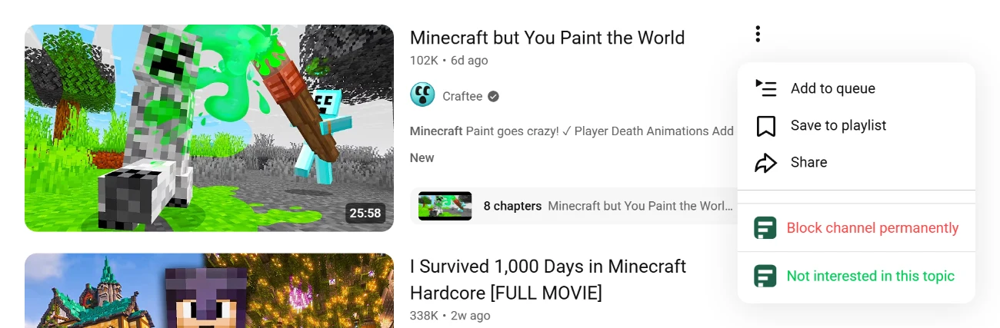
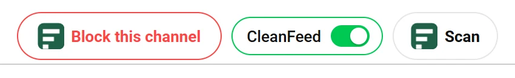

Short answerOn YouTube itself, the closest thing to a block is “Don't recommend channel” in a video's 3-dot menu. It's feedback for your recommendations, not a block. To hide a channel's videos in Home, search and Up next, you need a browser extension such as CleanFeed.
YouTube's own options
Here's what each one does, according to YouTube's own help pages, and where it stops.
Block a channel with CleanFeed
CleanFeed is a free Chrome extension that keeps a list of blocked channels in your browser and hides their videos on Home, search, Up next, channel pages, playlists, Shorts shelves and the Shorts player. It leaves your Subscriptions feed alone, by design. Channel blocking is unlimited on the free plan.
-
Add CleanFeed to Chrome
Open CleanFeed on the Chrome Web Store and click Add to Chrome. It starts working in the YouTube tabs you already have open. There's no account to create.
-
Open a video's 3-dot menu
On Home, in search or in the Up next list, click the 3 dots next to any video from the channel. CleanFeed adds two items under YouTube's own. When you're signed in to YouTube, they sit right after “Don't recommend channel”.

Signed out, YouTube's menu is shorter, as here. CleanFeed's two items are the last ones. -
Click “Block channel permanently”
The channel's videos disappear at once, on this page and in every other open YouTube tab. A message at the bottom of the page confirms which channel you blocked.
-
Or use the button on the channel
On a video's watch page, “Block this channel” sits next to Subscribe. On a channel page it's at the end of the tab row, next to a CleanFeed switch and Scan. Blocking from there takes you back to YouTube's Home.

On a channel page: Block this channel, a switch to show the channel on this page only, and Scan.
Where a blocked channel disappears
- Home, search results (the channel's own card too) and Up next
- Channel pages, playlists and Shorts shelves
- The Shorts player: a blocked channel's Short is hidden and paused, so you don't hear it, and playback moves on to the next Short that isn't blocked
- The channel's own page, which shows “This channel is blocked by CleanFeed” with a Show just now button, if you want one look without unblocking
CleanFeed matches the channel by name and, where YouTube shows it, by @handle, which helps when a channel is renamed.
What CleanFeed doesn't hide
- Your Subscriptions feed. By design: you chose those channels, so blocks never apply there.
- A video opened from a direct link. If someone sends you a link, it still plays.
- End-screen suggestions and autoplay. CleanFeed doesn't change autoplay, so YouTube can still autoplay or suggest a blocked channel's video at the end of another video.
- The YouTube app. CleanFeed works in Chrome on a computer, not on phones, tablets, TVs or consoles.
- YouTube's own suggestions. CleanFeed sends nothing to YouTube, so YouTube may keep suggesting the channel while CleanFeed keeps hiding it. Using “Don't recommend channel” as well tunes what YouTube suggests in the first place.
One more honest caveat: YouTube changes its pages often. When it does, any extension like this one can miss things until it's updated. If you spot a blocked channel slipping through, use Report a Bug in CleanFeed's Settings or email factuallogic98@gmail.com.
How to unblock a channel
- Click the CleanFeed icon in Chrome's toolbar. If it isn't there, open the puzzle-piece Extensions menu and pin CleanFeed.
- Open the Blocked tab and click the × next to the channel. “Clear All” removes every channel after asking you to confirm.
- The full list is also in CleanFeed's Settings (the gear icon), under Blocked.
Block topics and keywords, not only channels
Blocking one channel at a time works until a new channel about the same thing shows up. CleanFeed can also hide videos by a word in the title, or by one of 35 ready-made topics such as Crypto, Gambling, Politics or Brainrot, each with its own list of related terms. If 3 videos from one channel are hidden for the same topic, CleanFeed hides that whole channel too.
On the free plan, keywords and topics share 3 slots. See how keywords and topics work.
Block your first channel
Free, unlimited channel blocking, no account. It works in the YouTube tabs you already have open.
Add to Chrome, it's freeSources
- YouTube Help, Manage your recommendations & search results (checked October 13, 2026)
- YouTube Help, Hide users from your channel (checked October 13, 2026)
- YouTube Kids Help, Block & share content on YouTube Kids (checked October 13, 2026)
- PiunikaWeb, YouTube “Don't recommend channel” or “Block user” not working, March 29, 2023